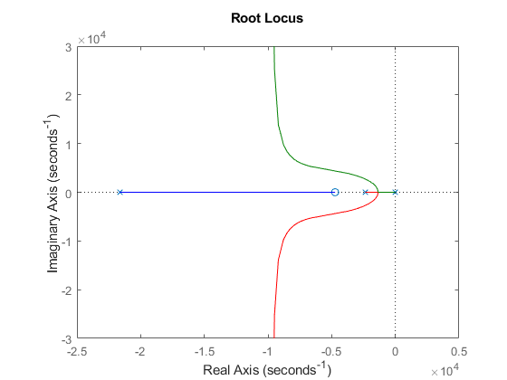
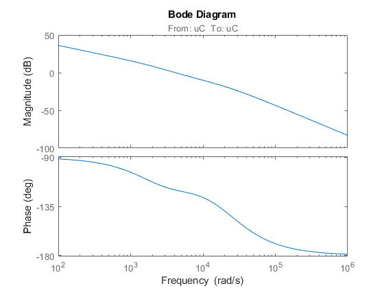
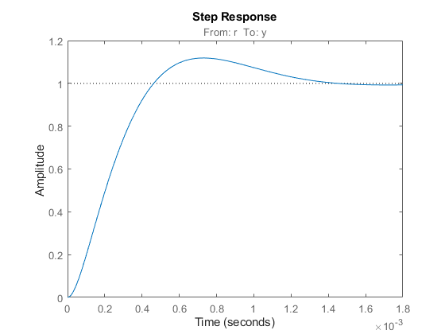

Contents
clc
s = tf('s');
L = 0.000470;
C1 = 0.000041666667;
R = 1;
U1 = 30;
%Planta/Modelo Função de transferencia %Planta da modelagem analítica numG = U1; denG = [L*C1 L/R 1]; G = tf(numG,denG); %controlSystemDesigner(G) -- parametrização dos ganhos PI via LGR
%Importando os ganho controlador PI controlador_pid = pid(C); gainP = controlador_pid.Kp gainI = controlador_pid.Ki %gainD = controlador_pid.Kd
gainP =
0.0455
gainI =
215.0596
%Função discreta Gc controlador: Gc = (s*gainP + gainI)/s ; Ts = 5.0e-5; Gdc = c2d(Gc, Ts, 'tustin'); Gdc
Gdc =
0.05083 z - 0.04007
-------------------
z - 1
Sample time: 5e-05 seconds
Discrete-time transfer function.
lugar das raízer lgr
figure(2) rlocusplot(LoopTransfer_C)

Diagrama de bode - resposta em frequencia
figure(3) bodeplot(LoopTransfer_C)

Resposta ao degrau unitario
figure(4) stepplot(IOTransfer_r2y)
